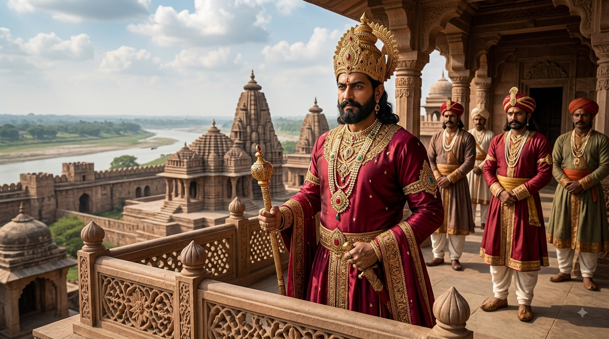
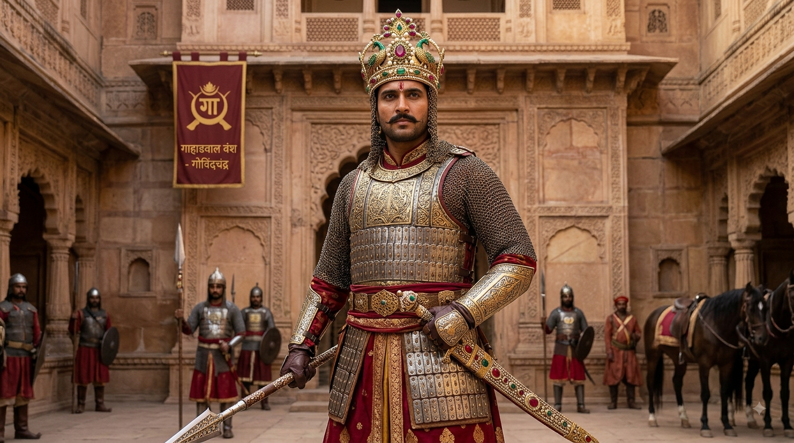
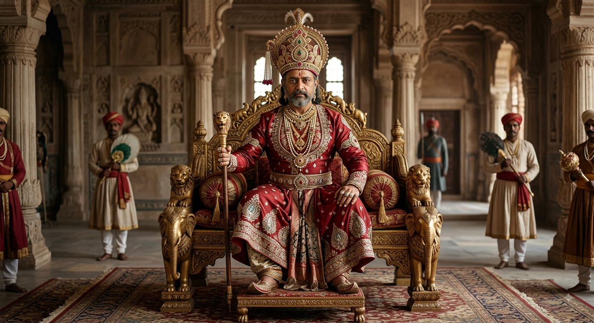
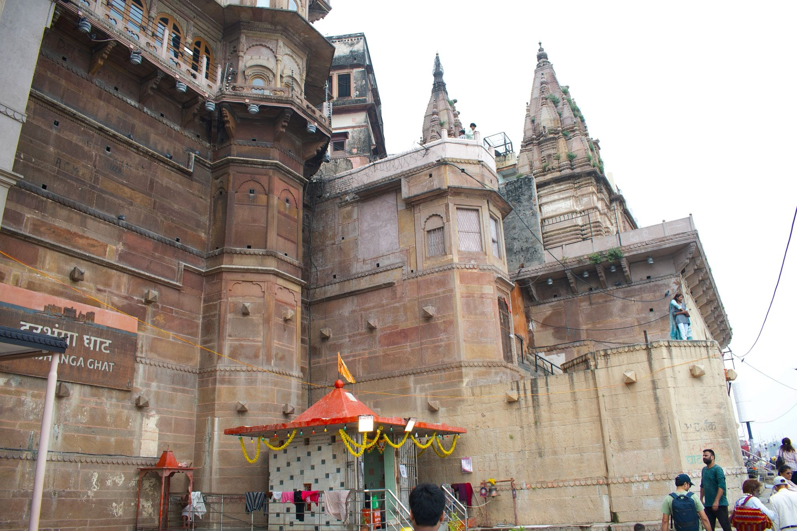
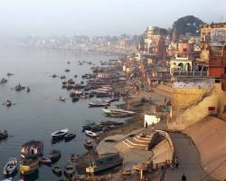
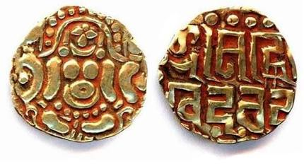
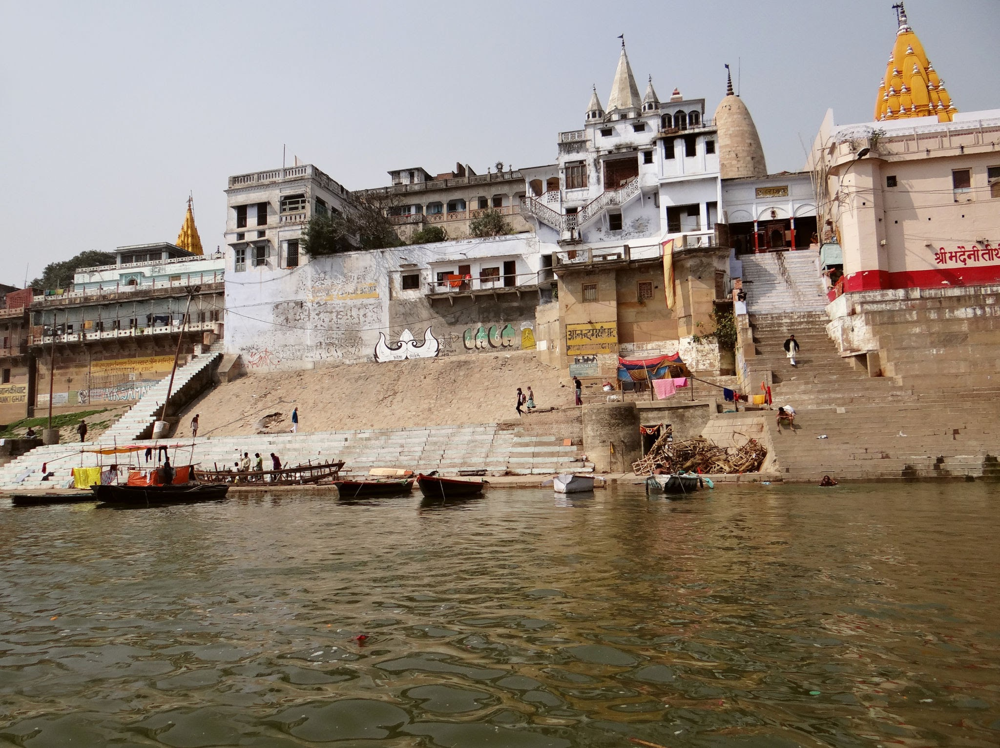
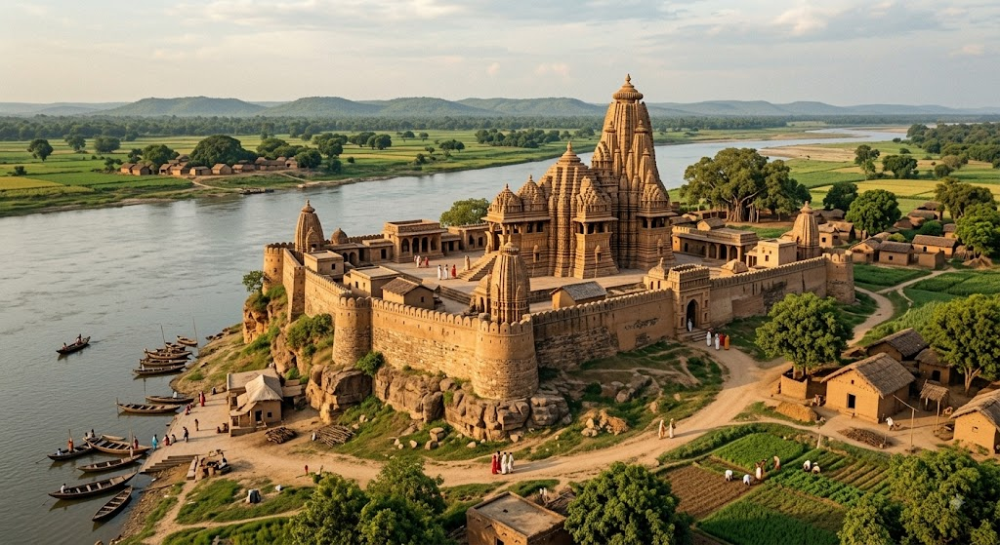

01
👑
Royal Authority
Kings stood at the centre of political authority, supported by nobles, officials and regional administrators.
Discover the dynasty that shaped the political and cultural landscape of medieval North India through powerful rulers, organized governance, sacred architecture and the flourishing cities of Kanyakubja and Varanasi.
The Gahadavala dynasty emerged as an influential power in northern India during the late 11th century and became closely associated with Kannauj and Varanasi.
At the height of their power, the Gahadavalas controlled important territories across the middle Ganga valley. Their political influence extended across present-day Uttar Pradesh and surrounding regions.
The dynasty is remembered particularly for rulers such as Chandradeva, Govindachandra and Jayachandra. Their reigns witnessed political consolidation, temple patronage, learning and religious activity.
Varanasi became an important centre during this period, while Kannauj retained its long-standing significance as a political and cultural centre of northern India.
The Gahadavala state relied on territorial administration, local elites, land grants and networks of settlements to maintain political authority.
Kings stood at the centre of political authority, supported by nobles, officials and regional administrators.
Copper-plate inscriptions and grants provide evidence for land donations and the relationship between rulers, religious institutions and local communities.
Local authorities and landed groups played an important role in administering villages, agricultural resources and revenue.
Strategic control of the Ganga plain helped the dynasty compete with neighbouring kingdoms and protect important political centres.
Trace the rise, consolidation and final phase of Gahadavala political influence.
Chandradeva established the Gahadavala dynasty as a significant political power in the Ganga-Yamuna region.
Govindachandra presided over one of the dynasty's most powerful periods, expanding influence and supporting administration, religion and learning.
Religious institutions, scholarship and temple activity contributed to the cultural importance of the region.
Jayachandra became the last major Gahadavala ruler, facing growing political pressure during the expansion of Ghurid power in North India.
The dynasty's political dominance declined following military conflicts with the expanding Ghurid forces.
Meet the rulers who shaped the political history of the Gahadavala kingdom.

The ruler who established the dynasty's political foundation.

A powerful ruler associated with the dynasty's political and cultural flourishing.

The last major ruler remembered in the dynasty's political history.

Religious patronage was an important feature of Gahadavala rule. Temples and sacred institutions received royal and elite support across the kingdom.
Varanasi in particular remained an important centre of Shaiva religious activity and pilgrimage. The broader architectural landscape of the Ganga plain reflected changing artistic traditions of the period.
The Gahadavala period contributed to the religious, intellectual and cultural landscape of medieval North India.
Sanskrit scholarship and religious learning remained important components of elite cultural life.
Shaiva, Vaishnava and other religious traditions flourished across the Ganga region.
Coinage and inscriptions provide valuable evidence about royal authority, economy and political networks.
Inscriptions preserve information about rulers, grants, genealogy, religious institutions and administration.
Explore the region associated with Gahadavala political influence.
Explore visual references connected with the Gahadavala historical landscape.



